NCERT Solutions for Class 11 Chemistry Chapter 7 Equilibrium
Topics and Subtopics in NCERT Solutions for Class 11 Chemistry Chapter 7 Equilibrium:
| Section Name | Topic Name |
| 7 | Equilibrium |
| 7.1 | Equilibrium in Physical Processes |
| 7.2 | Equilibrium in Chemical Processes – Dynamic Equilibrium |
| 7.3 | Law of Chemical Equilibrium and Equilibrium Constant |
| 7.4 | Homogeneous Equilibria |
| 7.5 | Heterogeneous Equilibria |
| 7.6 | Applications of Equilibrium Constants |
| 7.7 | Relationship between Equilibrium Constant K, Reaction Quotient Q and Gibbs Energy G |
| 7.8 | Factors Affecting Equilibria |
| 7.9 | Ionic Equilibrium in Solution |
| 7.10 | Acids, Bases and Salts |
| 7.11 | Ionization of Acids and Bases |
| 7.12 | Buffer Solutions |
| 7.13 | Solubility Equilibria of Sparingly Soluble Salts |
NCERT Solutions Class 11 ChemistryChemistry Lab ManualChemistry Sample Papers
NCERT TEXTBOOK QUESTIONS SOLVED
Question 1. A liquid is in equilibrium with its vapours in a sealed container at a fixed temperature. The volume of the container is suddenly increased, (i) What is the initial effect of the change on the vapour pressure? (ii) How do the rates of evaporation and condensation change initially? (iii) What happens when equilibrium is restored finally and what will be the final vapour pressure?
Answer: (i) On increasing the volume of the container, the vapour pressure will initially decrease because the same amount of vapours are now distributed over a larger space.
(ii) On increasing the volume of the container, the rate of evaporation will increase initially because now more space is available. Since the amount of the vapours per unit volume decrease on increasing the volume, therefore, the rate of condensation will decrease initially.
(iii) Finally, equilibrium will be restored when the rates of the forward and backward processes become equal. However, the vapour pressure will remain unchanged because it depends upon the temperature and not upon the volume of the container.
Question 2. What is Kc for the following reaction in state of equilibrium?
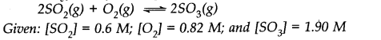
Answer:
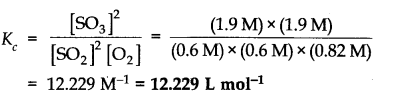
More Resources for CBSE Class 11
- NCERT Solutions
- NCERT Solutions Class 11 Maths
- NCERT Solutions Class 11 Physics
- NCERT Solutions Class 11 Chemistry
- NCERT Solutions Class 11 Biology
- NCERT Solutions Class 11 Hindi
- NCERT Solutions Class 11 English
- NCERT Solutions Class 11 Business Studies
- NCERT Solutions Class 11 Accountancy
- NCERT Solutions Class 11 Psychology
- NCERT Solutions Class 11 Entrepreneurship
- NCERT Solutions Class 11 Indian Economic Development
- NCERT Solutions Class 11 Computer Science
Question 3.
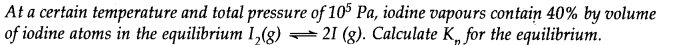
Answer:
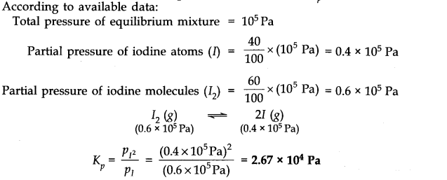
Question 4. Write the expression for the equilibrium constant for each of the following reactions
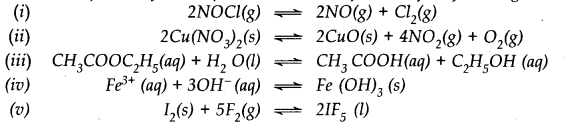
Answer:
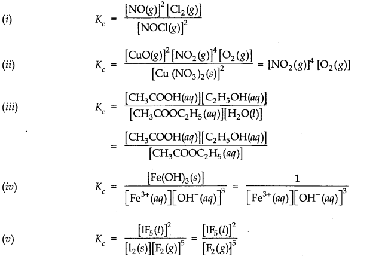
Question 5. Find the value of Kc for each of the following equilibria from the value of K
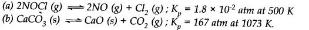
Answer:
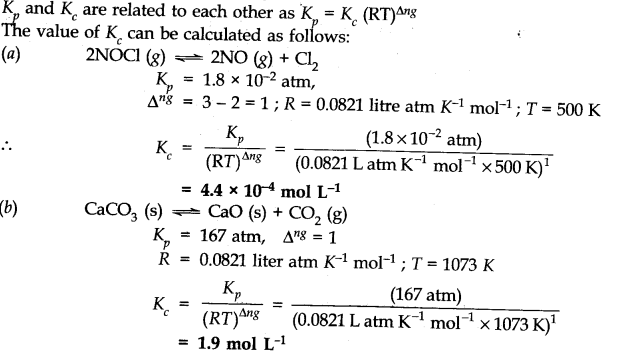
Question 6. For the following equilibrium, K =6.3 x 1014 at 1000 K. NO(g)+O3 —–>NO2(g) + O2(g) Both the forward and reverse reactions in the equilibrium are elementary bimolecular reactions. What is Kc for the reverse reaction?
Answer:
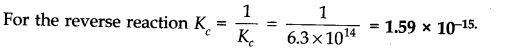
Question 7. Explain why pure liquids and solids can be ignored while writing the value of equilibrium constants.
Answer: This is because molar concentration of a pine solid or liquid is independent of the amount present.
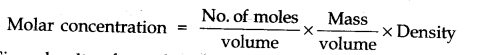
Since density of pure liquid or solid is fixed and molar mass is also fixed. Therefore molar concentration are constant.
Question 8. Reaction between nitrogen and oxygen takes place as follows:
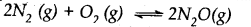
If a mixture of 0.482 mol of N2 and 0.933 mol of O2 is placed in a reaction vessel of volume 10 L and allowed to form N2O at a temperature for which Kc – 2.0 x 10-37, determine the composition of the equilibrium mixture.
Answer: Let x moles of N2(g) take part in the reaction. According to the equation, x/2 moles of O2 (g) will react to form x moles of N2O(g). The molar concentration per litre of different species before the reaction and at the equilibrium point is:
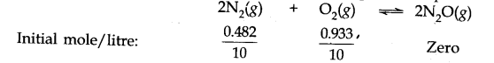
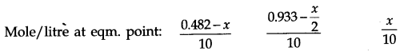
The value of equilibrium constant (2.0 x 10-37) is extremely small. This means that only small amounts of reactants have reacted. Therefore, is extremely small and can be omitted as far as the reactants are concerned.
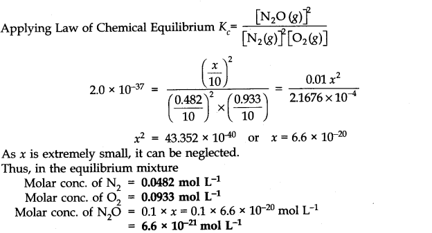
Question 9. Nitric oxide reacts with bromine and gives nitrosyl bromide as per reaction given below:
When 0.087 mole of NO and 0.0437 mole of Br2 are mixed in a closed container at constant temperature, 0.0518 mole of NOBr is obtained at equilibrium. Determine the compositions of the equilibrium mixture.
Answer: The balanced chemical equation for the reaction is:
According to the equation, 2 moles of NO (g) react with 1 mole of Br2 (g) to form 2 moles of NOBr (g). The composition of the equilibrium mixture can be calculated as follows:
No. of moles of NOBr (g) formed at equilibrium = 0.0518 mol (given)
No. of moles of NO (g) taking part in reaction = 0.0518 mol
No. of moles of NO (g) left at equilibrium = 0.087 – 0.0518 = 0.0352 mol
No. of moles of Br2 (g) taking part in reaction = 1/2 x 0.0518 = 0.0259 mol
No. of moles of Br2 (g) left at equilibrium = 0.0437 – 0.0259 = 0.0178 mol
The initial molar concentration and equilibrium molar concentration of different species may be represented as:
2NO (g) + Br2(g) ——————> 2NOBr(g)
Initial moles 0.087 0.0437 0
Moles at eqm. point: 0.0352 0.0178 0.0518
Question 10.
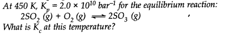
Answer:
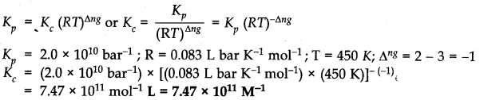
Question 11. A sample of HI (g) is placed in a flask at a pressure of 0.2 atm. At equilibrium partial pressure of HI (g) is 0.04 atm. What is Kp for the given equilibrium?
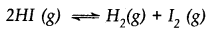
Answer:
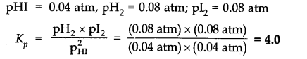
Question 12. A mixture of 1.57 mol of N2, 1.92 mol of H2 and 8.13 mol of NH3is introduced into a 20 L reaction vessel at 500 K. At this temperature, the equilibrium constant Kc for the reaction

Is this reaction at equilibrium? If not, what is the direction of net reaction?
Answer:
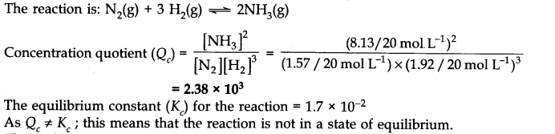
Question 13. The equilibrium constant expression for a gas reaction is,
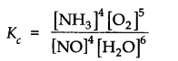
Write the balanced chemical equation corresponding to this expression.
Answer: Balanced chemical equation for the reaction is 4

Question 14. If l mole of H20 and 1 mole of CO are taken in a 10 litre vessel and heated to 725 K, at equilibrium point 40 percent of water (by mass) reacts with carbon monoxide according to equation.
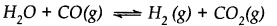
Calculate the equilibrium constant for the reaction.
Answer: Number of moles of water originally present = 1 mol
Percentage of water reacted =40%
Number of moles of water reacted = 1 x 40/100 = 0.4 mol
Number of moles of water left = (1 – 0.4) = 0.6 mole According to the equation, 0.4 mole of water will react with 0.4 mole of carbon monoxide to form 0.4 mole of hydrogen and 0.4 mole of carbon dioxide.
Thus, the molar cone, per litre of the reactants and products before the reaction and at the equilibrium point are as follows:
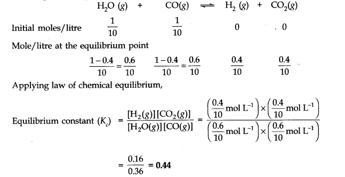
Question 15. What is the equilibrium concentration of each of the substances in the equilibrium when the initial concentration of ICl was 0.78 M?
Answer:
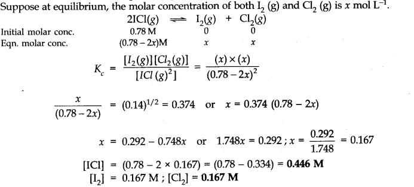
Question 16. K =0.04 atm at 898 K for the equilibrium shown below. What is the equilibrium concentration ok C2H6 when it is placed in a flask at 4 atm pressure,and allowed to come to equilibrium.
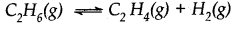
Answer:
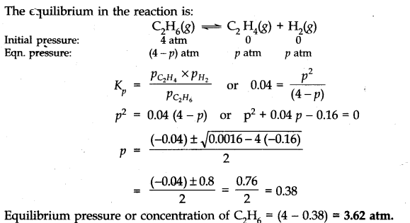
Question 17. The ester, ethyl acetate is formed by the reaction of ethanol and acetic acid and the equilibrium is represented as:
CH3COOH(l) + C2H5OH(l)——-> CH3COOC2H5(l) + H2O(l)
(i) Write the concentration ratio (concentration quotient) Q for this reaction. Note that water is not in excess and is not a solvent in this reaction.
(ii) At 293 K, if one starts with 1.000 mol of acetic acid and 0.180 mol of ethanol, there is 0.171 mol of ethyl acetate in the final equilibrium mixture. Calculate the equilibrium constant.
(iii) Starting mth 0.50 mol of ethanol and 1.0 mol of acetic acid and maintaining it at 293 K, 0.214 mol of ethyl acetate is found after some time. Has equilibrium been reached?
Answer:
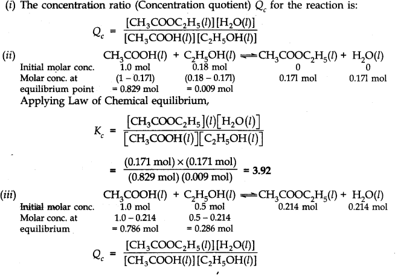
Since Qc is less than Kc this means that the equilibrium has not been reached. The reactants are still taking part in the reaction to form the products.
Question 18. A sample of pure PCl5 was introduced into an evacuated vessel at 473 K. After equilibrium was reached, the concentration of PCl5 was found to be 0.5 x 10-1 mol L-1. If Kc is 8.3 x 10-3 what are the concentrations of PCl3 and Cl2 at equilibrium?
Answer: Let the initial molar concentration of PCl5 per litre = x mol
Molar concentration of PCl5 at equilibrium = 0.05 mol
.’. Moles of PCl5 decomposed = (x – 0.05) mol
Moles of PCl3 formed = (x – 0.05) mol
Moles of Cl2 formed = (x – 0.05) mol
The molar conc./litre of reactants and products before the reaction and at the equilibrium point are:
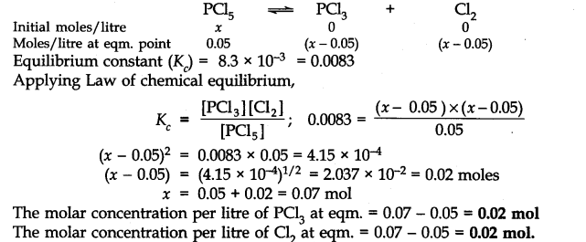
Question 19. One of the reactions that takes place in producing steel from iron ore is the reduction of iron
(II) oxide by carbon monoxide to give iron metal and C02
FeO(s) + CO(g) ———>Fe(s) + C02(g) ; Kp = 0.265 atm at 1050 K
What are the equilibrium partial pressures of CO and C02 at 1050 K if the initial pressures are: PCO = 1.4 atm and PCO2 = 0.80 atm?
Answer:
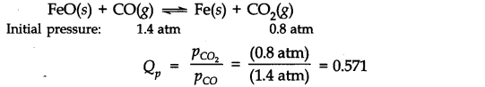
Since Qp>Kp(0.265), this means that the reaction will move in the backward direction to attain the equilibrium. Therefore, partial pressure of C02 will decrease while that of CO will increase so that the equilibrium may be attained again. Let p atm be the decrease in the partial pressure of C02. Therefore, the partial pressure of CO will increase by the same magnitude i.e., p atm.
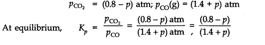
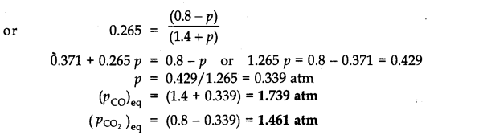
Question 20.
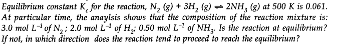
Answer:
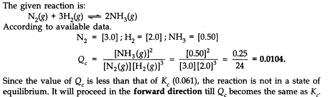
Question 21. Bromine monochloride (BrCl ) decomposes into bromine and chlorine and reaches the equilibrium:
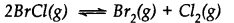
The value of Kc is 32 at 500 K. If initially pure BrCl is present at a concentration of 3.3 x10-3mol L-1what is its molar concentration in the mixture at equilibrium?
Answer: Let x moles of BrCl decompose in order to attain the equilibrium. The initial molar concentration and the molar concentration at equilibrium point of different species may be represented as follows:
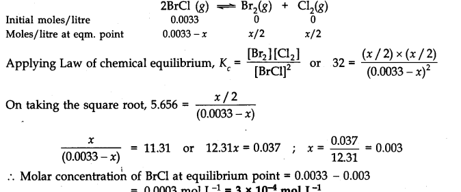
Question 22. At 1127 K and 1 atmosphere pressure, a gaseous mixture of CO and C02 in equilibrium with solid carbon has 90.55% CO by mass.
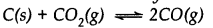
Calculate Kc for the reaction at the above temperature.
Answer:
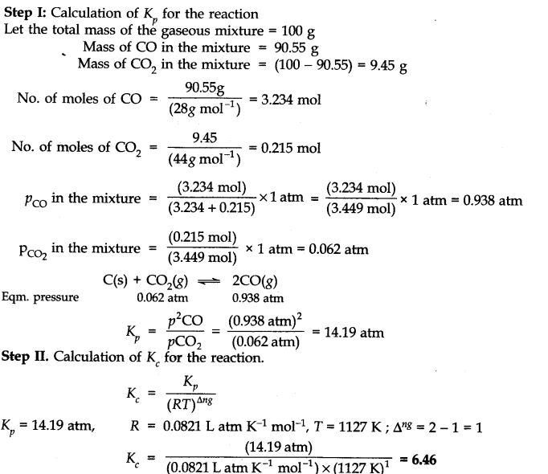
Question 23. Calculate (a) ∆G– and (b) the equilibrium constant for the formation of N02 from NO and 02 at 298 K
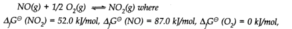
Answer:
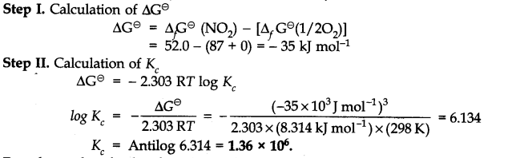
Question 24. Does the number of moles of reaction products increase, decrease or remain same when each of the following equilibria is subjected to a decrease in pressure bp increasing the volume?
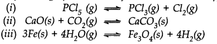
Answer: (i) Pressure will increase in the forward reaction and number of moles of products will increase.
(ii) Pressure will increase in backward reaction and number of moles of products will decrease.
(iii) The change in pressure will have no effect on the equilibrium constant and there will be no change in the number of moles.
Question 25. Which of the following reactions will get affected by increase in pressure ? Also mention whether the change will cause the reaction to go to the right or left direction.
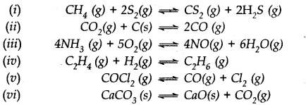
Answer: Only those reactions will be affected by increasing the pressure in which the number of moles of the gaseous reactants and products are different (np ≠ nr) (gaseous). With the exception of the reaction (1); all the reamaining five reactions will get affected by increasing the pressure. In general,
- The reaction will go to the left if np> nr.
- The reaction will go to the right if nr > np .
Keeping this in mind,
(i) Increase in pressure will not affect equilibrium because np = nr = 3.
(ii) Increase in pressure will favour backward reaction because np (2) > nr (1)
(iii) Increase in pressure will favour backward reaction because np (10) > nr (9)
(iv) Increase in pressure will favour forward reaction because np (1) < nr (2)
(v) Increase in pressure will favour backward reaction because np (2) > nr(1)
(vi) Increase in pressure will favour backward reaction because np (1) > nr (0).
Question 26. The equilibrium constant for the following reaction is 1.6 x 105at 1024 K.
Find the equilibrium pressure of all gases if 10.0 bar of HBr is introduced into a sealed container at 1024 K.
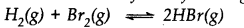
Ans.
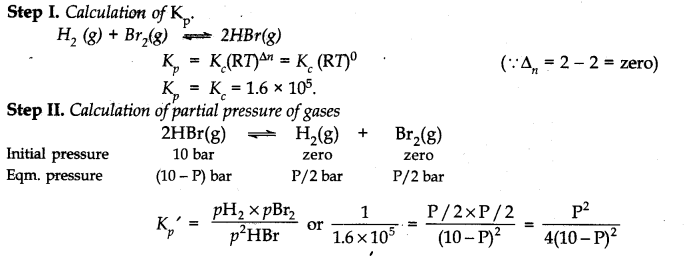
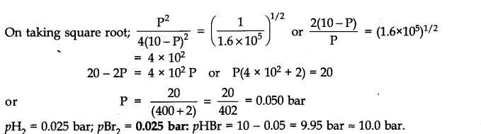
Question 27. Hydrogen gas is obtained from the natural gas by partial oxidation with steam as per the following endothermic reaction:
Write the expression for Kp for the above reaction
How will the value of Kp and composition of equilibrium mixture be affected by:
(i) increasing the pressure, (ii) increasing the temperature, (iii) using a catalyst?
Answer: The expression for Kp for the reaction is:
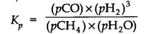
(i) By increasing the pressure, the number of moles per unit volume will increase. In order to decrease the same, the equilibrium gets shifted to the left or in the backward direction. As a result, more of reactants will be formed and the value of Kp will decrease.
(ii) If the temperature is increased, according to Le Chatelier’s principle, the forward reaction will be favoured as it is endothermic. Therefore, the equilibrium gets shifted to the right and the value of Kp will increase.
(iii) The addition of catalyst will not change the equilibrium since it influences both the forward and the backward reactions to the same extent. But it will be attained more quickly.
Question 28. What is the effect of:
(i) addition of H2 (ii) addition of CH3OH
(iii) removal of CO (iv) removal of CH3OH
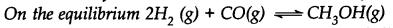
Answer: (i) Equilibrium will be shifted in the forward direction.
(ii) Equilibrium will be shifted in the backward direction.
(iii) Equilibrium will be shifted in the backward direction.
(iv) Equilibrium will be shifted in the forward direction.
Question 29. At 473 K, the equilibrium constant Kc for the decomposition of phosphorus pentachloride (PCl5) is 8.3 x 10-3 . if decomposition proceeds as:
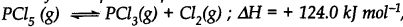
(a) Write an expression for Kc for the reaction
(b) What is the value of Kc for the reverse reaction at the same temperature.
(c) What would be the effect on Kc if
(i) More of PCl5is added (ii) Temperature is increased.
Answer:
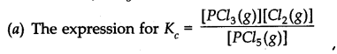
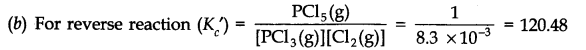
(c) (i) By adding more of PCl5, value of Kc will remain constant because there is no change in temperature.
(ii) By increasing the temperature, the forward reaction will.be favoured since it is endothermic in nature. Therefore, the value of equilibrium constant will increase.
Question 30. Dihydrogen gas used in Haber’s process is produced by reacting methane from natural gas with high temperature steam. The first stage of two stage reaction involves the formation of CO and H2 In second stage, CO formed in first stage is reacted with more steam in water gas shift reaction.
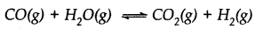
If a reaction vessel at 400°C is charged with an equimolar mixture of CO and steam so that PCO = PH2O = 4.0 bar, what will be the partial pressure of H2 at equilibrium? Kp = 0.1 at 400°C.
Answer:
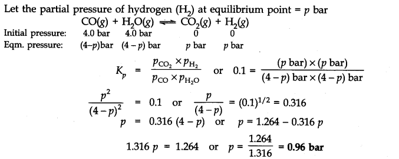
Question 31. Predict which of the following will have appreciable concentration of reactants and products:
Answer: Following conclusions can be drawn from the values of Kc .
(a) Since the value of Kc is very small, this means that the molar concentration of the products is very small as compared to that of the reactants.
(b) Since the value of Kc is quite large, this means that the molar concentration of the products is very large as compared to that of the reactants.
(c) Since the value of Kc is 1.8, this means that both the products and reactants have appreciable concentration.
Question 32.The value of Kc for the reaction 302(g) —>203(g) is 2.0 x 10-50 at 25°C. If equilibrium concentration of 02 in air at 25°C is 1.6 x 10-2, what is the concentration of O3?
Answer:
Question 33.
Answer:
Question 34. What is meant by conjugate acid-base pair? Find the conjugate acid/base for the following species: HNO2, CH–, HClO4 , OH–, CO32-, S2-
Answer: An acid-base pair which differs by a proton only (HA———> A– + H+) is known as conjugate acid-base pair.
Conjugate acid:HCN,H20,HCO3–,HS–.
Conjugate base:NO2–,ClO4–,O2–
Question 35. Which of the following are Lewis Acids?
H2O,BF3, H+ and NH4+,
Answer: BF3, H+ ions are Lewis acids.
Question 36. What will be the conjugate bases for the Bronsted acids?HF, H2S04 and H2C03?
Answer: Conjugate bases: F–, HSO–4 , HCO–3.
Question 37. Write the conjugate acids for the following Bronsted bases:
NH2, NH3 and HCOO–
Answer: NH3, NH4+ and HCOOH
Question 38.The species H20, HCO3–, HSO4– and NH3 can act both as Bronsted acid and base. For each case, give the corresponding conjugate acid and base.
Answer:
Question 39. Classify the following species into Lewis acids and Lewis bases and show how these can act as Lewis acid/Lewis base?
(a) OH– ions (b) F– (c) H+ (d) BCl3
Answer: (a) OH– ions can demate an electron pair and act as Lewis base.
(b) F– ions can donate an electron pair and act’as Lewis base.
(c) H+ ions can accept an electron pair and act as Lewis acid.
(d) BCl3 can accept an electron pair since Boron atom is electron deficient. It is a Lewis acid.
Question 40. The concentration of hydrogen ions in a sample of soft drink is 3.8 x 10-3 M. What is the pH value?
Answer: pH = – log [H+] = – log (3.8 x 10-3) = – log 3.8 + 3 = 3 – 0.5798 = 2.4202 = 2.42
Question 41. The pH of a sample of vinegar is 3.76. Calculate the concentration of hydrogen ion in it.
Answer: pH = – log [H+] or log [H+] = – pH = – 3.76 = 4.24
.-. [H+] = Antilog 4.24 = 1.738 x 10-4 = 1.74 x 10-4 M
Question 42. The ionization constant of HF, HCOOH and HCN at 298 K are is 6.8 x 10-4 , 1.8 x 10-4 and 4.8 x 10-9 respectively, Calculate the ionization constant of the corresponding conjugate base.
Answer: For F– , Kb =Kw/Ka= 10-14/(6.8 x 10-4) = 1.47 x 10-11 = 1.5 x 10-11 .
For HCOO-, Kb = 10-14/(1.8 x 10-4) = 5.6 x 10-11
For CN–, Kb= 10-14/(4.8 X 10-9) = 2.08 x 10-6
Question 43. The ionization constant of phenol is 1.0 x 10-10. What is the concentration of phenolate ion in 0.05 M solution of phenol? What will be its degree of ionization if the solution is also 0.01 M in sodium phenolate?
Answer:
Question 44. The-first ionization constant of H2S is 9.1 x 10-8. Calculate the concentration of HS– ions in its 0.1 M solution and how will this concentration be affected if the solution is 0.1 M in HCl also? If the second dissociation constant of H2S is 1.2 x 10-13, calculate the concentration of S2-under both conditions.
Answer:
Question 45. The ionization constant of acetic acid is 1.74 x 10-5. Calculate the degree of dissociation of acetic acid in its 0.05 M solution. Calculate the concentration of acetate ions in the solution and its pH.
Answer:
Question 46. It has been found that the pH of a 0.01 M solution of an organic acid is 4.15. Calculate the concentration of the anion, the ionization constant of the acid and its PKa.
Answer:
Question 47. Assuming complete dissociation, calculate the pH of the following solutions:
(a) 0.003 M HCl (b) 0.005 M NaOH (c) 0.002 M HBr (d) 0.002 M KOH
Answer:
Question 48. Calculate the pH of the following solutions:
(a) 2g ofTlOH dissolved in water to give 2 litre of the solution
(b) 0.3 g of Ca(OH)2 dissolved in water to give 500 mL of the solution
(c) 0.3 g of NaOH dissolved in water to give 200 mL of the solution
(d) l mL of 13.6 M HCl is diluted with water to give 1 litre of the solution.
Answer:
Question 49. The degree of ionization of a 0.1 M bromoacetic acid solution is 0.132. Calculate the pH of the solution and the PKa of bromoacetic acid.
Answer:
Question 50. The pH of0.005 M codeine (C18H21N03) solution is 9.95. Calculate the ionization constant and PKb.
Answer:
MORE QUESTIONS SOLVED
NCERT Solutions for Class 11 Chemistry Chapter 7 Very Short Answer Type Questions
Question 1. What is meant by equilibrium?
Answer: Equilibrium is a state at which rate of forwarding reaction is equal to the rate of backward reaction.
Question 2. State the law of mass action?
Answer: It states that the rate at which a substance reacts is directly proportional to its molar concentration.
Question 3. What is meant by reaction quotient?
Answer: It is defined as the ratio of the product of molar concentration of products to the product of molar concentration of reactants at any stage of the reaction.

Question 4. Define ionic equilibrium.
Answer: The equilibrium between ions and unionised molecules is called ionic equilibrium.
Question 5. What is meant by ionic product of water (kw)?
Answer: It is the product of concentration of [ H3O+] and [OH–] at a specific temperature.
Kw = [H3O+] [OH–]
= 1.0 x 10-14 at 298 K
Question 6. Define solubility product.
Answer: It is product of molar concentration of ion raised to the power of number of ions produced per compound in saturated solution.
Question 7. How does common ion affect the solubility of electrolyte?
Answer: Solubility of electrolyte decreases due to common ion effect.
Question 8. Write conjugate add and conjugate base of H2O?
Answer: Conjugate acid is H3O+ and conjugate base is OH–.
Question 9. Give two characteristics of a buffer solution.
Answer:
- Its pH does not change on the addition of small amount of acid or base.
- Its pH does not change on dilution or standing.
Question 10. How does a catalyst affect the equilibrium constant?
Answer: The equilibrium constant is not affected by a catalyst.
Question 11. State Ostwald’s dilution law.
Answer: Ostwald’s dilution law states that the degree of dissociation of weak electrolyte is inversely proportional to square root of its concentration.
Where, Kfl and Kfc are acid dissociation and base dissociation constants.
Question 12. What is basic buffer?
Answer: Basic buffer is the buffer whose pH is more than 7. It is a mixture containing weak base and its salt with a strong acid, e.g., NH4Cl + NH4OH
Question 13. S032-is Bronsted base or acid and why?
Answer: S032-is Bronsted base because it can accept H+.
Question 14.
What is the relationship between Kp and Kc ?
Answer: Kp = Kc
because ∆n = 0.
Question 15. Define common ion effect.
Answer: The supervision in concentration of one of the ions by adding other ion as common ion is called common ion effect.
NCERT Solutions for Class 11 Chemistry Chapter 7 Short Answer Type Questions
Question 1. The following concentration were obtained for the formation of NH3 from N2 and H2 at equilibrium at 500 K.[N2(g)] = 1.5 x 10-2 M [H2 (g)] = 3.0 x 10-2 M [NH3] = 1.2 x 10-2 M. Calculate equilibrium constant.
Answer:
Question 2. Write the equilibrium constant (Kc) expression for the following reactions.
Answer:
Question 3. Given the equilibrium N2O4 (g) ——->2NO2 (g) K=0.15 atm at 298 K
(a) What is Kp using pressure in torr?
(b) What is Kc using units of moles per litre.
Answer:
Question 4. In the reaction A + B———> C + D, what will happen to the equilibrium if concentration of A is increased?
(b) The equilibrium constant for a reaction is 2 x 10-23 at 25°C and 2 x 10-2 at 50°C. Is the reaction endothermic or exothermic?
(c) Mention at least three ways by which the concentration of S03 can be increased in the following reaction in a state of equilibrium.
Answer: (a) The reaction will shift in the forward direction.
(b) Endothermic
(c) (i) lowering the temperature (ii) increasing pressure.
(iii) increasing concentration of oxygen.
Question 5. (i) Define Le Chatelier’s principle.
(ii) Following reactions occur in a Blast furnace.
Fe203(s) + 3CO(g) ———–>2Fe(s) + 3CO2(g)
use Le chatelier’s principle to predict the direction of reaction when equilibrium mixture is disturbed by
(a) adding Fe203 (b) removing CO2 .
(c) removing CO.
Answer: (a) When a system under equilibrium is subjected to a change in temperature, pressure or concentration, then the equilibrium shifts in such a direction so as to undo the effect of the change.
(ii) (a) On adding Fe203(s), the equilibrium will remain unaffected.
(b) By removing CO2 (g), the equilibrium will be shifted in the forward direction.
(c) By removing CO(g), the equilibrium will be shifted in the backward direction.
NCERT Solutions for Class 11 Chemistry Chapter 7 Long Answer Type Questions
Question 1. (i) Point out the differences between ionic product and solubility product.
(ii) The solubility of AgCl in water at 298 K is 1.06 x 10-5 mole per litre. Calculate its solubility product at this temperature.
Answer: (i)

Question 2. At certain temperature and under a pressure of 4 atm, PCl5 is 10% dissociated. Calculate the pressure at which PCl5 will be 20% dissociated at temperature remaining constant.
Answer: Calculation of Kp
NCERT Solutions for Class 11 Chemistry Chapter 7 Multiple Choice Questions
Question 1. The equilibrium expression, Kc= [C02] represents the reaction.
Question 2. Hydrogen molecule (H2) can be dissociated into hydrogen atoms (H). Which one of the following changes will not increase the number of atoms present at equilibrium?
(a) adding H atoms (b) increasing the temperature
(c) increasing the total pressure (d) increasing the volume of the container
Question 3. What is the expression for Keq? for the reaction
Question 4. A catalyst will increase the rate of a chemical reaction by
(a) shifting the equilibrium to the right (b) shifting the equilibrium to the left (c) lowering the activation energy (d) increasing the activation energy
Question 5. What is the correct expression for the representation of the solubility product constant of Ag2 Cr04 ?
Question 6. In a closed system
Question 7. H2+ S ——->H2S + energy.
In this reversible reaction, select the factor which will shift the equilibrium to the right.
(a) adding heat (b) adding H2S
(c) blocking hydrogen gas reaction (d) removing hydrogen sulphide gas
Question 8. What effect does a catalyst have on the equilibrium position of a reaction?
(a) a catalyst favours the formation of products
(b) a catalyst favours the formation of reactants
(c) a catalyst does not change the equilibrium position of a reaction
(d) a catalyst may favour reactants or product formation, depending upon the directiofi in which the reaction is written.
Question 9. A chemist dissolves an excess of BaSO4 in pure water at 25°C if its Ksp= 1 x 10-10 what is the concentration of barium in the water?
(a) 10-4 M (b) 10-5 M (C) 10-15 M (d) 10-6 M
Question 10. If in a mixture where Q = k is combined, then what happens?
(a) the reaction shift towards products
(b) the reaction shift towards reactants
(c) nothing appears to happen, but forward and reverse are continuing at the same rate
(d) nothing happens
Answer: 1.(b) 2.(c) 3.(c) 4.(c) 5.(a)
6.(d) 7.(a) 8.(c) 9.(c) 10.(c)
NCERT Solutions for Class 11 Chemistry Chapter 7 HOTS Questions
Question 1. For the equilibrium 2 NOCl(g)——-> 2NO(g) + Cl2(g) the value of the equilibrium constant Kc is 3.75 x 10-6 at 1069 K. Calculate the Kp for the reaction at this temperature?
Answer: We know that Kp = Kc(RT)∆n
For the above reaction, ∆n = (2 + 1) – 2 = 1 Kp = 3.75 x 10’6 (0.0831 x 1069)
Kp = 0.033.
Question 2. The values of Ksp of two sparingly soluble salts Ni(OH)2 and AgCN are 2.0 x 10-15 and 6 x 10-17 respectively. Which salt is more soluble? Explain.
Answer:
Question 3. The value of Kc for the reaction 2A——>B + C is 2 x 10-3. At a given time, the composition of reaction mixture is [A] = [B] = [C] = 3 x 10-4 M. In which direction the reaction will proceed?
Answer: For the reaction the reaction quotient Qc is given by Qc = [B] [C]/[A]2 as [A] = [B] = [C] = 3 x 10-4 M Qc = (3 x 10-4) (3 x10-3)/(3 x 10) = 1
as Qc > Kc, so, the reaction will proceed in the reverse direction.
Question 4. PCl5, PCl3 and Cl2 are at equilibrium at 500 K and having concentration 1.59M PCl5 1.59M Cl2 and 1.41M PCl5. Calculate Kc for the reaction PCl5———>PC13+ Cl2
Answer: The equilibrium constant Kc for the above reaction can be written as:
Question 5. Dihydrogen gas is obtained from natural gas by partial oxidation with steam as per following endothermic reaction:
CH4(g) + H2O(g) ——> CO(g) + 3 H2(g)
(a) Write an expression for Kpfor the above reaction.
(b) How will the values of Kp and composition of equilibrium mixture be affected by (i) increasing the pressure (ii) increasing the temperature (iii) using a catalyst?
Answer:
(b) (i) value of Kp will not change, equilibrium will shift in backward direction.
(ii) value of Kp will increase and reaction will proceed in forward direction.
(iii) no effect.